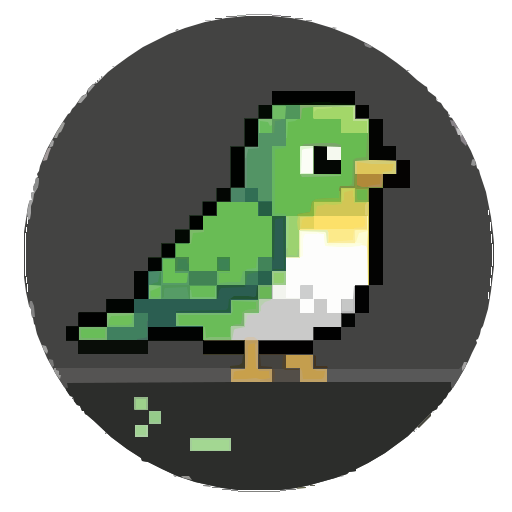

Find your place
Browse the Explorer, switch open files, search commands, and move between editor, sidebar, and terminal with F6.

tuim.Tuim v0.3.0 · A workspace for your terminal
A fresh workspace. Plugins within reach. Tuim v0.3.0 brings a redesigned Extensions panel, VS Code Dark Modern colors, and Treesitter highlighting to your terminal.
Open source · Linux & macOS releases · MIT license

The workspace
A compact sidebar keeps your files and tools together. Open commands with F1, or use the mouse to find your next action.

Browse the Explorer, switch open files, search commands, and move between editor, sidebar, and terminal with F6.
Use Vim motions or modeless text editing. Split the editor, select with the mouse, and right-click for common actions.
Browse Installed and Discover in Extensions. Configure, enable, disable, or uninstall plugins in place. Mason manages language servers; the AI panel launches installed coding assistants.


New in v0.3.0
Extensions opens directly to your installed library, including bundled plugins and dependencies. Search the marketplace in Discover, or select a plugin to configure, enable, disable, or uninstall it.
Side-by-side details on wide terminals. A focused view on smaller screens. Your installed library works offline, and uninstalling preserves your configuration.
Explore Extensions
Three editing modes
Switch from the mode badge in the footer. Press F11 to enter Zen and return to your previous mode.
Modal editing, Vim motions, and Neovim commands, surrounded by Tuim’s native tools.

Modeless editing with familiar save, undo, search, clipboard, and selection shortcuts.

The editor takes the viewport, with a quiet footer to get you back. Your terminal session is preserved.
These are real terminal captures of the v0.3.0 interface using portable symbols and VS Code Dark Modern. Editor captures include Treesitter highlighting; the Extensions capture shows the local library in a recovery session. Open any image for the full view.
Make it yours
Change themes, indentation, line numbers, and shortcuts from native settings. Tuim keeps its configuration, plugins, and state in separate XDG directories, leaving your regular Neovim configuration alone.
Read about configuration
Installation
The installer selects your platform’s release bundle and verifies its checksum.
Native bundles include Neovim. Setup installs dependencies and prepares Treesitter highlighting.
curl -fsSL https://raw.githubusercontent.com/Rouboufy/tuim/main/setup.sh | bashThen run tuim. Inspect the installer
Platform status & limitations
Linux is the primary tested platform. macOS and WSL workflows are still being verified across terminals. Mouse, clipboard, and modified keys depend on your terminal and transport.
Plugins that expect to control the outer terminal may need adjustments. Coding assistants require their own installed CLI and authentication.